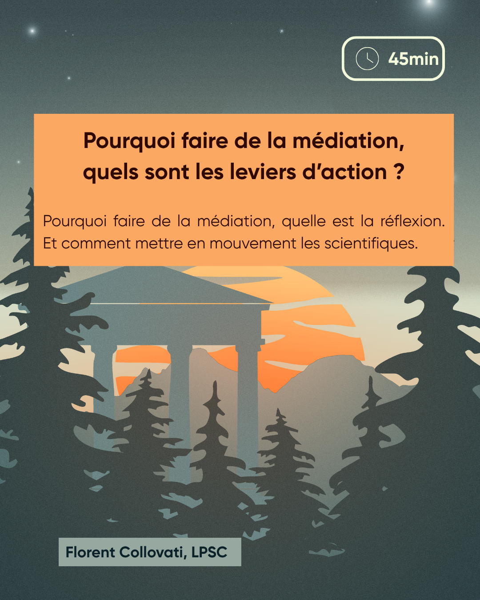

Résumé
Pourquoi faire de la médiation, quelle est la réflexion. Et comment mettre en mouvement les scientifiques.
intervenant·es
Florent Collovati est chargé de communication dans le Laboratoire de Physique Subatomique et de Cosmologie (LPSC). Il y élabore des stratégies de vulgarisation scientifique,rédige des textes, organise des événements et tisse des liens : entre les chercheurs, les institutions et leurs publics; entre la science et la société.
